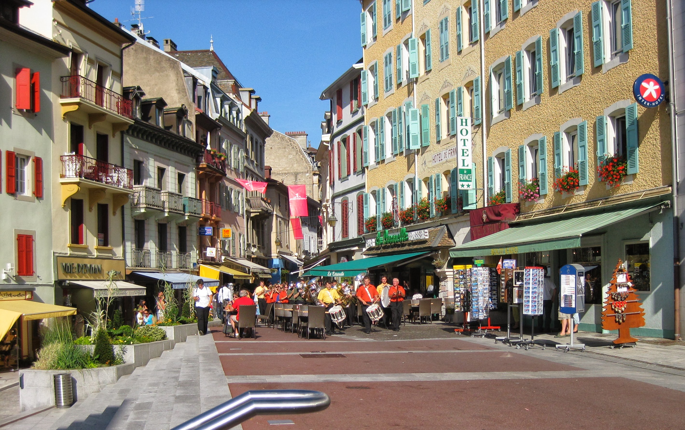

|
|
|
|
Evian Masters - Tuesday July 21st - Practice Day
A continental breakfast before starting the day on our outdoor garden patio was just the ticket - cheese, ham and buttered croisants with orange juice and cafe au lait.We successfully blagged our way onto the caddie/press transport at the end of the Rue Nationale, 2 minutes walk from the hotel, and were at the golf course by about 9.00am. Mimmi Hjorth and Catriona Matthew were standing just outside the clubhouse exchanging new baby pictures.
 The TV pictures do not do the course justice. It is a gorgeous golf course with the most marvelous views. The views over the lake get better as you climb the course and when I say climb, I mean it.
{kind=link}
I followed Natalie Gulbis for the first 5 holes who was out practicing on her own, and then picked up the Christina Kim / Becky Brewerton group who were just teeing off on the 6th. I then wandered out to the far end of the course to get the lie of the land. Came across Tutta and her caddie Dave Brooker on the 15th. He was sporting a big black air cast thingy on his recently broken ankle. Laura Davies spotted them as well, and having attracted Tutta's attention, started doing hop-a-long impressions. Tutta did the hop-a-long impression right back at her.
There was a mini pro-am in the afternoon, a Societe General affair with primarily LET players including LD, Sophie and Alfie. Alfie's husband, Kent (Nilsson "The Magic Man" ex NHL Ice Hockey star) has had another op on his knee, and after struggling to walk at the British last year is now back on her bag. He said to put some money on Alfie as she was playing better than last year when she won.
There was still no sign of the Aussie lasses luggage. They had gone down to the market that morning to buy some shorts. Back down in town, and a local band were giving a concert in Place Charles de Gaulle. I sat on the steps to listen and ended up filling in a questionnaire for one of the band support staff. I explained I was a tourist with limited French, but we plowed on anyway. I understood almost all of the questions so shouldn't have skewed the results too much. I took an instant like to the woman when I ticked the 45-60 age range box, and she told me that I looked a lot younger!
We had dinner at the Brasserie Continental at the next table to Mardi Lunn (Lisa Hall's caddie) and Audrey (Sophie Gustafson's ex-caddie). They were joined by Sophie and Ty Votaw. My travelling companion, Margaret, knows Sophie, and had got guest credentials from her. Ty was returning home the next day and generously offered to swap his credentials into my name. I typed my name into his Blackberry and arrangements were made to collect the pass from the Royal Hotel sometime after 1pm the next day.